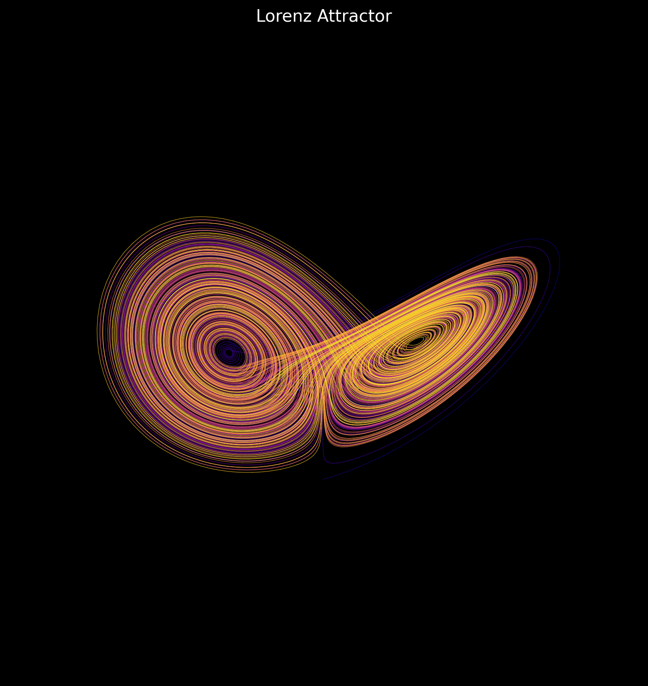

A study in mathematical beauty
A little order.
A little chaos.
Not drawn. Not imagined.
Just equations, given room to move.
Pick a form. Make it your own.
Fig. 01Strange attractor

Interactive rendering is unavailable. You can still explore the original sculptures in the source gallery ↗.
The collection
SIX FORMS. NO TWO VIEWS ALIKE.The equation is the artist.
Some forms settle into symmetry. Others never quite repeat. This is a small collection of mathematical objects you can turn, tune, and get lost in. No rendered videos. Just your browser, and the rules underneath.